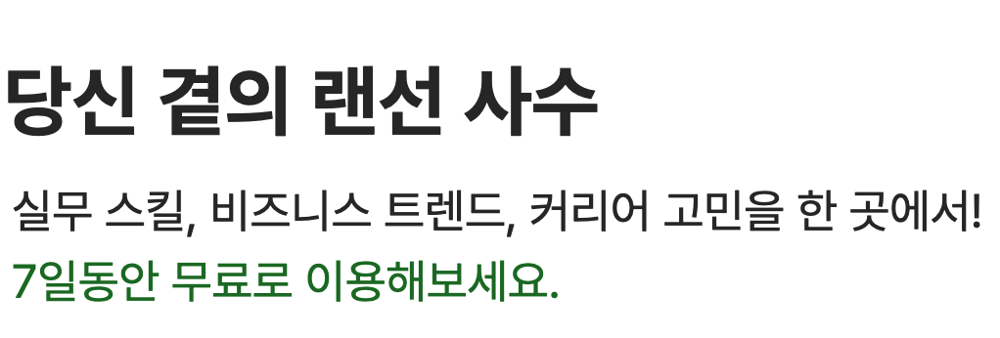
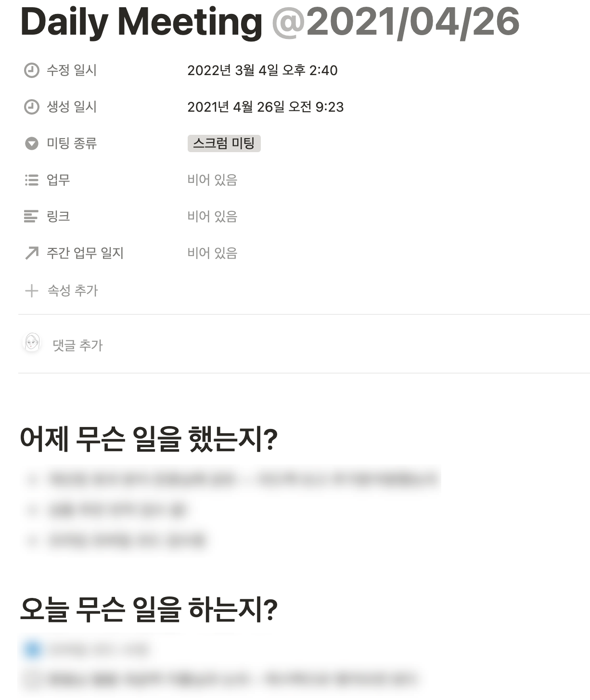
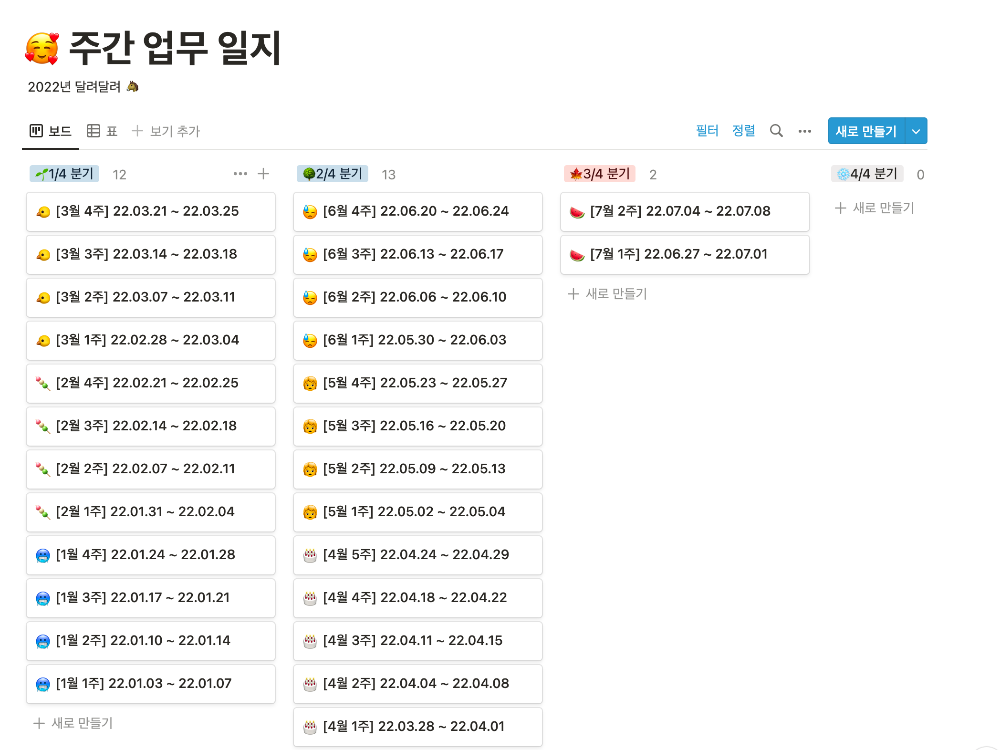
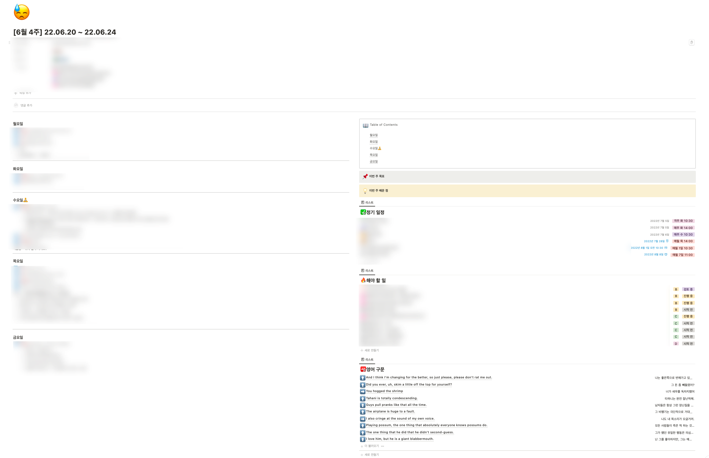
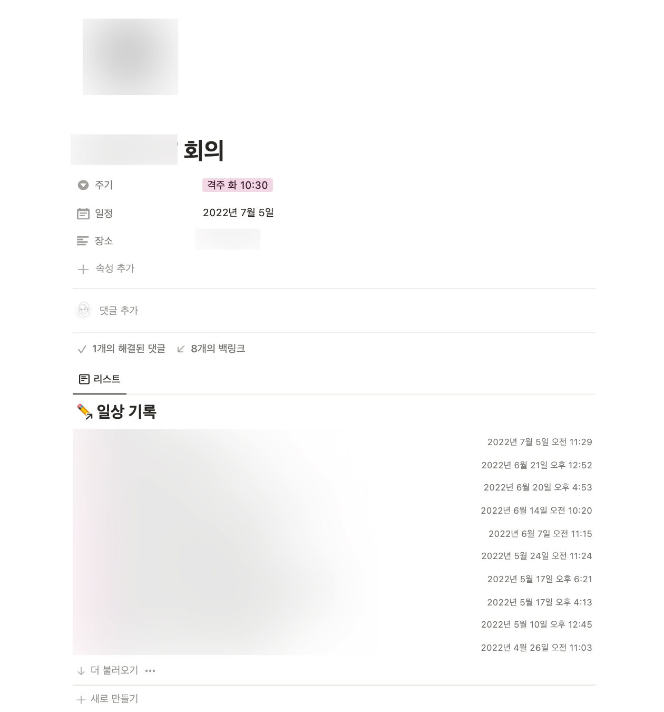
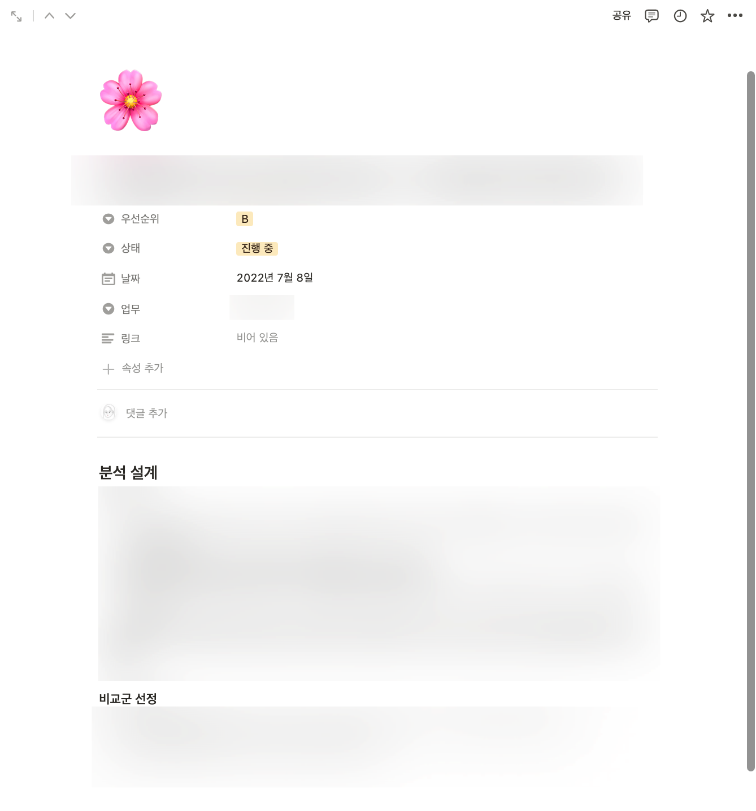
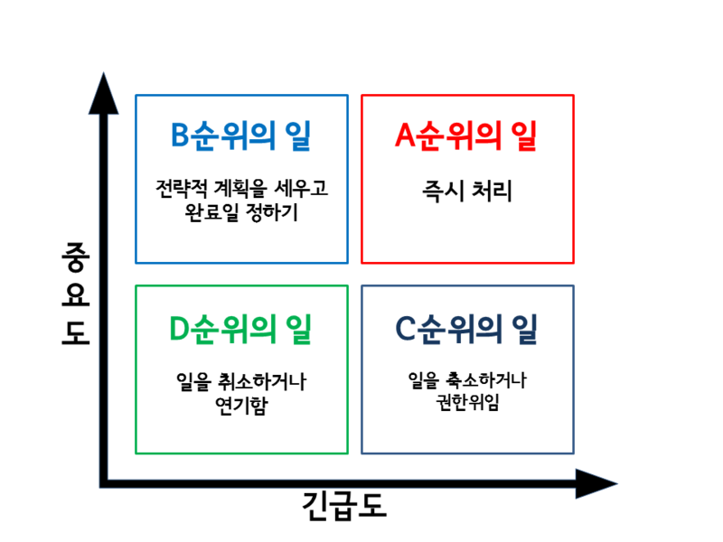
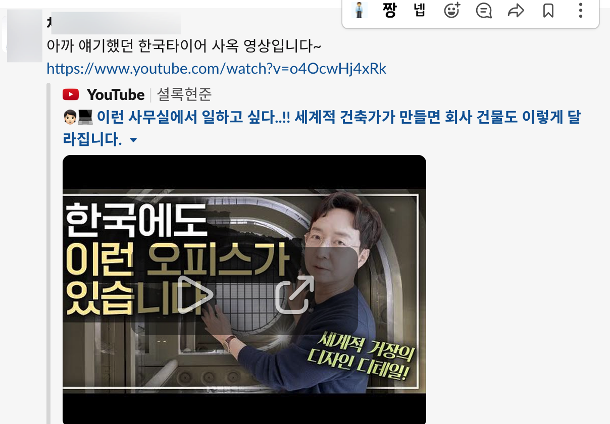
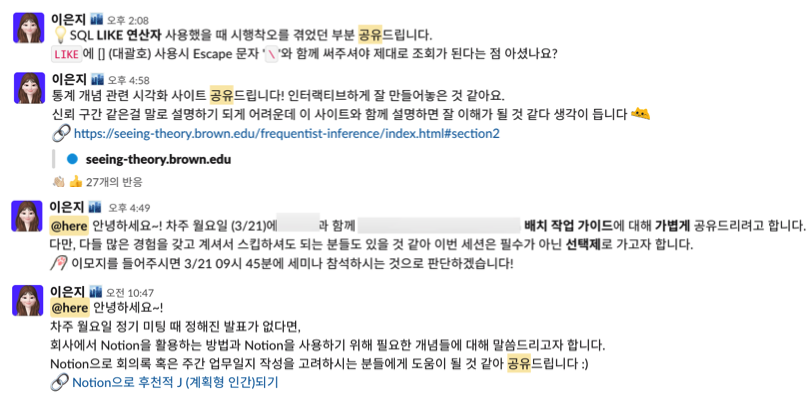

라떼 시리즈 (1): 회사에서 꽤나 괜찮은 주니어가 되려면
- 이번엔 특별히 라떼 시리즈로 찾아왔습니다! 이제 어느덧 서른을 접어들면서 일, 결혼, 차, 사치, 주식, 해외 여행 등 여러 분야에 관심을 가지게 되면서 어른의 세계에 접어들고 있는데요.
- 첫 회사에서 2년 간 머무르면서 회사에서 꽤나 괜찮은 주니어가 되기 위해 노력들을 했던 것을 공유드리고자 합니다.
- 참고로 꼰대 주의입니다. 그렇기 때문에 라떼 시리즈이죠. 항상 느끼는 건 조언을 곧이 곧대로 받아들이는 것보단 제 멋대로 (?) 받아들이는 것을 추천합니다. (이것 또한 조언이군요 ㅎㅎ)
회사에서 일을 하다 보면 여러 난관을 겪을 때가 많습니다.
난관의 종류는 각양각색인데, 제가 겪었던 난관들은 다음과 같습니다.
- 일이 휘몰아 칠 때, 그런데 스케줄 관리가 안 될 때
- 친한 직장 동료가 퇴사를 했을 때
- 고과가 좋지 않을 때
각각의 어려움을 어떻게 극복하고자 했는지 솔직하게 말씀드리고자 합니다. (회사 사람이 안 봤으면 좋겠다)
일이 휘몰아 칠 때, 그런데 스케줄 관리가 안 될 때
문제 상황
저는 시간 바보입니다.
평상시 사람이라면 어떤 스케줄이 머릿 속으로 INPUT으로 들어오면 머릿 속 함수로 이 시간에는 다른 스케줄이 있으니 "이 시간은 안돼!"라 OUTPUT을 뱉어줘야하는데요.
제 머리 속 구조는 어떤 스케줄이 있다면 “뭐 없는 것 같은데 ? 일단 OK” 라 OUTPUT을 냅다 뱉어버립니다.
그래서 학교 다닐 때 친구들한테 많이 혼나기도 했습니다. 이중 약속을 잡아놓고 당일에 알고 사과한 적이 많았더라죠… (친구들아 미안…)
이런 실수 방지를 위해 항상 핸드폰 달력에 일정을 기입하고, 약속을 잡기 전에 그 달력을 꼭 보고 체크 후 OK / NOT OK를 결정했습니다.
그런데 회사에 와서는 이보다 더 치밀한 스케줄 관리가 필요했습니다.
저는 업무 분류로 치면 4개의 일을 하는데, 일전에 이 4개의 업무가 동시에 진행되는 경우가 있었습니다.
예를 들면 이렇습니다.
- A 업무를 2주 안에 완료해야 합니다. 저는 2주 안에 이 일을 할 수 있도록 일을 진행합니다.
- 갑분 팀장님이 B 업무는 어떻게 되가? 라는 질문을 받아 B 업무도 진행하고자 합니다.
- 갑분 C 업무에서 집계 오류가 생겨 수정해야 합니다. 라이브 서비스에 반영되는 것이라 급한 건입니다.
- 까먹고 있었던 D 업무를 지시한 다른 팀이 오랜만에 연락을 했습니다. 한 달 안에 끝내기로 약속했는데, 이 때까지 전달주시는 거냐고 확인차 물어봅니다.
다시 생각해도 끔찍하네요. 과거의 저는 이런 경우라면 이렇게 생각했습니다.
A,B,C,D 업무를 일정 안에 다 끝내려면 풀 야근을 해야겠군?
이러고 풀 야근을 했는데, 일정 안에 못 끝낼 것 같아 스트레스를 받으면서 팀장님께 조심스럽게 면담을 신청했습니다.
제가 C를 급하게 처리하느냐고 A를 2주 안에 못 끝낼 것 같아요. B나 D는 혹시 다른 분께 부탁드리면 안 될까요?
하지만 팀장님은 그래도 제가 하던 일이니 저보고 일을 마무리하라고 말씀하셨습니다. 그리고, B나 D는 급하지 않으니 일을 미루라 말씀하셨습니다.
면담 뒤에 저는 우울했습니다. 일이 쌓이는 느낌이 아주 부담스럽고 숨이 턱 막히는 느낌이었죠…
또한 제가 일 스케줄 관리를 못해서 일이 밀리고 쌓인다고 생각해 자책을 했었습니다.
극복 방법: 후천적 J (계획형 인간) 되기
이런 슬럼프 극복하려면 어떻게 할까? 생각하면서 밤을 새가면서 이것 저것 찾아보기 시작했습니다.
그때 만난 좋은 친구가 퍼블리 [link]라는 사이트였습니다.

당신 곁의 랜선 사수. 크. 캐치프레이즈 죽이지 않나요?
{:.figure}
일주일 무료로 시작했었는데 저도 모르게 결제가 되어 세 달 동안 여러 아티클을 읽었습니다. 그래도 돈이 아깝지 않을 만큼 많이 읽고 적용할 수 있었어요.
특히 일잘러의 업무 스킬 카테고리를 모두 다 읽었을 정도였는데, 배운 점이 많았습니다.
그 중 가장 유용했던 것은 노션 활용법이었는데요. 우선 저는 원래도 회사에서 노션으로 할 일을 정리하고는 했지만 일마다 새로운 페이지를 파는 형태였습니다.

놀랍게도 이게 다입니다!
{:.figure}
그러다 보니 내가 주 단위나 월 단위로 어떤 일을 해야 하고 어떤 일들을 했는지 관리하기 어려웠습니다.
이런 단점을 해결하기 위해 퍼블리의 어떤 글에서 좋은 템플릿을 보고 그대로 적용해보았는데, 효과는 굉장했습니다. (링크를 찾고 싶은데 못찾겠네요 ㅠㅠ)
이 노션 템플릿은 아래처럼 구성되어 있었는데요.
- 주간 업무 일지
- 정기 일정
- 회의록
- 해야할 일
핵심은 주간 업무 일지 안에 정기 일정, 회의록, 해야할 일을 연결된 데이터베이스로 두어 주간으로 할 일을 계획할 때 여러 정보를 참고할 수 있도록 하는 것입니다.

위는 주간 업무 일지의 대문 페이지인데요. “보드” 형식으로 두어서 하나의 아이템 당 월 ~ 금요일의 할 일들을 적었습니다.
하나의 아이템을 클릭하면 다음과 같이 펼쳐집니다.

좌측에는 매일 아침마다 업무 계획을 적고 실제로 했는지의 여부를 [] 체크할 수 있도록 구성했습니다.
우측에는 이 업무 계획을 세우는데 필요한 정기 일정, 해야할 일을
연결된 데이터베이스로
볼 수 있도록 놓았는데요.
- 그 전에 이번 주 목표 및 배운 점을 두어서 주간 목표를 세우고 배운 점도 써서 일에 보람을 느낄 수 있도록 했습니다. (지금은 잘 안 쓰는 것이 함정)
- 정기 일정에는 정기적인 회의를 적고, 그 주기와 회의 일정을 표시해놓았습니다. 또한 정기 일정의 아이템을 클릭하면 다음과 같이 회의록을 확인할 수 있도록 구성하였습니다.

- 해야할 일에는 제가 해야할 일 전부를 적고, 이를 업무 우선 순위와 진행 상태에 따라 나누었습니다. 하나의 아이템을 클릭하면 이 해야할 일에 대해서 어떤 식으로 진행하고 있는지 계획을 적었습니다.

특히 업무 우선 순위는 퍼블리에서 또 배울 수 있었는데, 업무의 긴급도와 중요도에 따라 A ~ D로 나누고 처리하는 것이 좋다고 합니다. 각 등급별 의미는 다음과 같습니다.

- A: 중요하고 긴급하므로 당장 처리해야하는 일
- B: 중요하지만 긴급하지 않은 일 (ex. 상사가 "이거 해주세요"라고 하는 일)
- C: 애드 혹 업무. 혹은 빨리 처리해야하는 일
- D: 긴급도와 중요도가 모두 낮은 업무. 혹은 백로그
ACAC → BCBC 순으로 업무를 진행한다면 효율적으로 진행할 수 있다고 합니다.
앞서 말씀드린 예시의 우선 순위를 따져 보면 아래처럼 되겠죠?
- A 업무를 2주 안에 완료해야 합니다. 저는 2주 안에 이 일을 할 수 있도록 일을 진행합니다. -> A 중요도
- 갑분 팀장님이 B 업무는 어떻게 되가? 라는 질문을 받아 B 업무도 진행하고자 합니다. -> B 중요도
- 갑분 C 업무에서 집계 오류가 생겨 수정해야 합니다. 라이브 서비스에 반영되는 것이라 급한 건입니다. -> C 중요도
- 까먹고 있었던 D 업무를 지시한 다른 팀이 오랜만에 연락을 했습니다. 한 달 안에 끝내기로 약속했는데, 이 때까지 전달주시는 거냐고 확인차 물어봅니다. -> D 중요도
그렇기 때문에 A, C를 동시에 진행하면서 C가 끝나면 B를 하고 D를 하면 되겠죠.
다만, 그래도 업무가 안 끝난다? 하면 B나 D의 경우 일을 시킨 분께 양해를 구하면 됩니다. (참 쉽죠~?)
물론 제가 주어진 일을 일정 안에 하는 것은 중요한 능력이고 기한 내에 모두 일을 한다면 베스트이겠지만, 제가 일을 기한 내에 못 끝낸 건 "저만의 부족"이 아닙니다.
"회사가 일을 많이 준 것일 수도 있다"는 합리적인 의심을 해야 하고 이걸 적극적으로 타개해나가는 것이 필요합니다.
저도 이 당시에는 주니어라 “일 미루는 걸” 가장 어려워했었는데, 지금은 제 업무 파워의 80% 정도만 할애하면서 안 되는 부분은 양해를 구하는 편입니다.
(팀장님이 뭐라 한다면 사람 뽑아달라 해야댐… 회사 사람들이 안 봤으면 좋겠다 222)
이렇게 일에 휘몰아칠 때 대응 방법을 배우면서 “Notion으로 후천적 J (계획형 인간) 되기” 로 팀에서 발표도 했습니다!
제 발표를 듣고 비슷하게 회의록 기록을 하거나 노션을 사용하시는 분들을 보면서 뿌듯함도 얻었더라죠~~!
친한 직장 동료가 퇴사를 했을 때

거의 입사일이 일주일 차이로 비슷했던 직장 동료가 퇴사를 했던 적이 있습니다. 첫 회사에서 첫 퇴사를 간접적으로 경험했다보니 생각보다 충격이 컸는데요.
이 분은 저랑 같은 일을 했었는데, 퇴사하고 나서 여러가지 생각이 들었습니다.
이 때 들었던 생각은 크게 세 가지입니다.
- 이 분이 했던 일을 어떻게 나눠야하지? 당분간 일이 많아지겠군.
- 내가 잘 케어해줬어야 했는데… 무엇이 힘들어서 퇴사했지? 왜 내가 알아주지 못했을까…
- 난 이제 누구랑 놀지?
“이 분이 했던 일을 어떻게 나눠야하지?” 에 대한 해결책
이 생각은 가장 처음 & 많이 들었던 생각이지만, 생각보다 잘 해결됐습니다.
팀 동료랑 체계적으로 일을 나누고 이 기간 내에 하자!정해서 약속한대로 일이 해결되었습니다.
물론 남의 일을 맡는 것이 정말 쉽지 않다는 깨달음도 있었습니다.
그 분의 일과 넘쳐나는 코드들을 보면서 "정말 많이 힘들었겠구나"하고 역지사지로 느낄 수 있었고, 이걸 제가 다 이해하고 제 방식으로 풀어내야 한다는 것이 힘들었습니다.
사이드 팁으로 이렇게 남의 일을 제가 갑자기 맡는 경우에는 그 분 방식을 애써 다 이해하고 그대로 구현하는 것보다 제 방식대로 이해하고 구현하는 것이 더 쉽고 좋은 길입니다.
왜냐면 남의 생각을 100% 이해할 수 없기 때문에 최대한 비슷하게 구현한다 해도 달라지는게 자연의 섭리이거든요… ㅎㅎㅎ
아무튼 본론으로 돌아와서 이 생각은 각자 업무 분담을 잘 한 덕분에 크게 지속되지 않았습니다.
"왜 내가 이 분의 힘듦을 알아주지 못했을까?"라는 자책감에 대한 해결책
첫 번째 생각이 끝나고 나니 자책감이 자리잡았습니다. 가장 친했던 동료이고 같은 일을 했던 분이었기 때문인데요.
이 분이 나가시고 나서 회고를 진행했는데 그 자리에서 울 정도였습니다 ㅋㅋㅋㅋ (F야 멈춰!)
그때 다른 시니어 분들의 진심 어린 말씀이 많이 와닿았습니다.
시니어 분들은 이런 경험을 여러 번 경험했던 탓인지 잘 대처하시고 계신 것이 인상 깊었습니다.
그 분이 나갔던 건 “이 회사보다 더 나은 곳을 가기 위한” 것이지 내가 잘못한 것이 아니라고. 그 분도 날개를 펼치러 다른 길을 택한 것인데 자책감을 가질 필요 없다고 말씀을 주셨습니다.
이와 더불어서 제 마음을 공감해 주셨던 것도 감사했습니다. 자신도 처음에 다른 동료의 퇴사를 겪었을 때 힘들었었다… 그런데 괜찮아진다. 라면서요.
친했던 동료이기 때문에 퇴사하시고 나서도 여러 번 연락하고 만났었는데요.
그 분과 여러 이야기를 하면서 저 때문에 퇴사한 것은 아닌 것에 안도를 하고 제 일에 다시 집중하자 마음을 먹을 수 있었습니다.
나름의 배신감 ? 자책감? 같은 것을 느낄 수도 있지만, 일시적인 감정이고 쓸모없는 감정이라는 것을 배울 수 있었습니다.
"난 이제 누구랑 놀지?"에 대한 해결책
이런 걱정을 했던 건 그 분이 나가고 나니 저희 팀은 저를 제외하고 모두 남자였기 때문입니다 ㅋㅋㅋ
뭐 성별에 따라 못 놀고 그런 것은 전혀 아니지만 (오히려 제 성격이 괄괄해서 남자랑 노는 것도 편한 편…), 가장 아쉬웠던 건 "산책 메이트"가 없어진 것이었습니다.
점심을 먹고 퇴사하셨던 분과 단 둘이 회사를 나가 도란도란 얘기하곤 했는데, 이제 단 둘이 나가서 산책을 할 사람이 없다는 것이 슬펐습니다.
이쯤되면 지겨우니 추억의 채연의 “둘이서” 짤 투척!
{:.figure}
그래서 해결책은 흠… 제가 회식을 좋아해서 다른 팀원들의 번개에 잘 참여했던 것 같아요.
그리고 산책은 가끔 다른 산책 팟에 껴서 같이 갔습니다. (눈치없게 매일 가지는 않음^^…)
또한, 상사분들께 어필했어요. 저 다 좋은데 산책메이트가 없는게 아쉽다~ 라구요. 그래서인지 많이 신경써주시고 그에 맞는 시스템적 대책도 마련해주셨습니다.^^
그래서 지금은 사실 해피합니다. 또 회고 때 "드립이나 짤, 재밌는 영상을 적극적으로 공유하는 문화"를 만들자고 제안했었는데요.
다만 문화니까 강제하는 것보다 그냥 편하게 하고 싶을 때 공유하자고 말씀을 드렸습니다.
가장 뿌듯했던 순간은 주니어분들이 아닌 시니어분들이 이런 걸 실천하셨을 때였습니다.
물론 제 발언때문에 그런건 아닐 수도 있지만요~!

이런 문제를 해결했다고 해서 "꽤나 괜찮은 주니어"가 된다고 말하긴 좀 어렵지만,
회사의 리텐션 측면에서 충격에서 벗어나 회사 생활을 잘 유지하는 것만으로도 꽤나 괜찮은 주니어가 아닌가 생각해 봅니다 :>
고과가 좋지 않을 때
이건 정말 슬픈 일입니다. 저는 일에 최선을 다했다고 생각했는데 그렇지 못한 결과를 받을 수 있기 때문입니다.
사실 전 그렇게 고과에 연연하진 않았습니다. 제가 생각해도 손에 꼽는 output이 아직 없다고 느꼈기 때문이죠.
그런데 고과가 A인 사람은 연봉이 얼마더라, 누가 받은 것 같더라 이런 소리를 들으면 마음이 아파오기 시작했습니다.
나도 짱! 열심히 했는데!
라고 반발심이 생기기 시작하죠. 사람이란게 비교를 하면 할수록 불행해지는 것 같습니다.
아무튼 그래서 저도 고과를 어떻게 하면 더 잘 받을 수 있을까 고민을 해보면서 "내 포지션을 구축하는 것"을 올해의 목표로 잡았습니다.
(효과가 갱장한지는 다음 해에 알 수 있습니다 To be continued…)
내 포지션 구축하기
고과를 잘 받으려면 상사가 관심이 있어야할 일들을 잘 수행하면 된다는 말을 어디선가 들은 적이 있습니다.
그래서 저도 처음엔 굵직굵직한 일들을 새로 맡고 싶어했습니다. 이곳 저곳 발표할만한 거리를 만드는 그런 일 말이죠.
물론 잘 해낸다면 고과는 따놓은 당상이겠지만, 애석하게도 저는 그렇게 잘 나서고 상사가 원하는대로 일을 빨리 해내는 사람은 아닌 것 같아 좌절했던 때가 있었습니다.
이런 고민들을 남자친구와 얘기했던 적이 있었는데, 또 좋은 얘기를 들었습니다.
저는 공격수보다 미드필더인 것 같다고.
사실 전 축구를 몰라서 공격수는 알겠는데 미드필더는 뭐 가운데 있는 사람? 으로만 치부했었는데, 남자친구가 설명을 잘 해주었습니다.
축구 세계에서는 미드필더보단 공격수가 많이 주목을 받는다고 합니다. 심지어 FIFA 올해의 선수상을 수년간 메날두가 차지하다, 18년 모드리치라는 미드필더가 차지하였다고 합니다.
제가 팀 내에서 잘 하는 역할이 뭘까 생각해보면 팀에서 공유하는 것을 좋아하고 같이 문제를 해결하려는 문화를 만드는 것을 잘합니다.

수많은 자발적으로 하는 공유…
{:.figure}
이것이 성과로 이어지지 않을지는 몰라도 팀에서 중요한 역할을 하는 것은 맞다고 생각합니다.
또한 단기적으로 보이지는 않아도 장기적으로 봤을 때 좋은 역할을 하고 있는 것이라면 가치가 있는 역할이라 생각합니다.
그래서 팀에서 허리와 같은 역할을 하는 것 같다고 격려해주었고 그것이 바로 미드필더가 하는 역할이다고 말해주었습니다.
물론 과분한 수식어이지만 저는 이런 포지션을 밀고 나가기로 결심했습니다.
- 미드필더가 갑자기 공격수 되겠다고 설치는 것도 안 어울린다. 물론 발전해 “공격형 미드필더"가 될 수도 있겠지만 내 정체성을 공격수로 바꾸는 것은 어울리지 않는다고 생각했고
- 팀장님께도 은근슬쩍 저는 미드필더같은 역할을 하는 것 같다고 (뻔뻔하게) 전달드렸습니다.
그리고 고과를 잘 받기 위해 무한정 애쓰는 태도도 좋지 않은 것 같습니다.
그런다고 잘 받는 것도 아니구고요. 그냥 전 유재석의 마인드대로 살아가기로 했습니다.
굳이 내가 애를 써가면서 목표만을 바라보며 계산적으로 살아야할까? 그렇게도 못할 것 같기도 하고 그냥 나답게 사는게 좋은 것 같습니다.
옛말 틀린 것 하나 없어요. “뱁새가 황새 따라가다 다리 찢어집니다”. 꼰대같지만 정말 나답게 회사에서 포지션을 구축하는 것이 좋을 것이라 판단합니다.
마치며
캬 다시 읽어보니 정말 라떼라떼 합니다. 하지만 누군가에게는 도움이 되길 바라며 이런 글을 쓰고 저도 힘들 때마다 다시 되돌아 보기 위해 씁니다.
아! 그리고 또 하나의 목적은 언젠가 제 최애 프로그램 유퀴즈에 나와보는 것인데요.
물론 섭외가 오려면 훨씬 더 대단한 사람이여야겠지만 이런 라떼 시리즈를 잘 엮는다면 가능성이 0%는 아니지 않을까요?
유명한 라떼 시리즈로 아래 링크들도 추천하며 이 글을 마칩니다. 라떼가 부정적인 어감일수도 있지만 저는 마음 건강에 많은 도움이 되었던 글입니다. 강추!